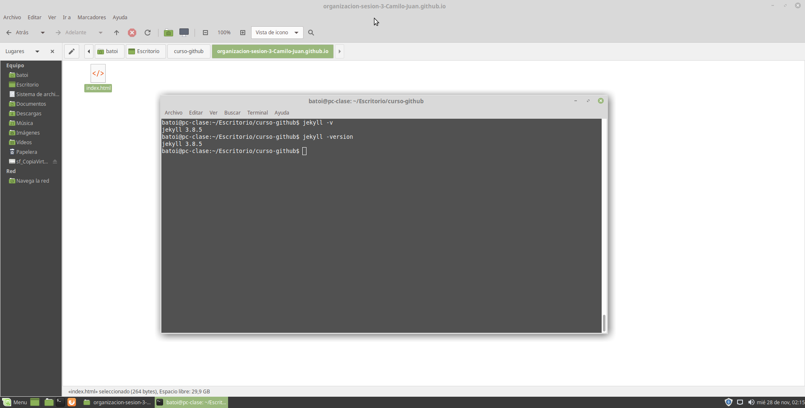
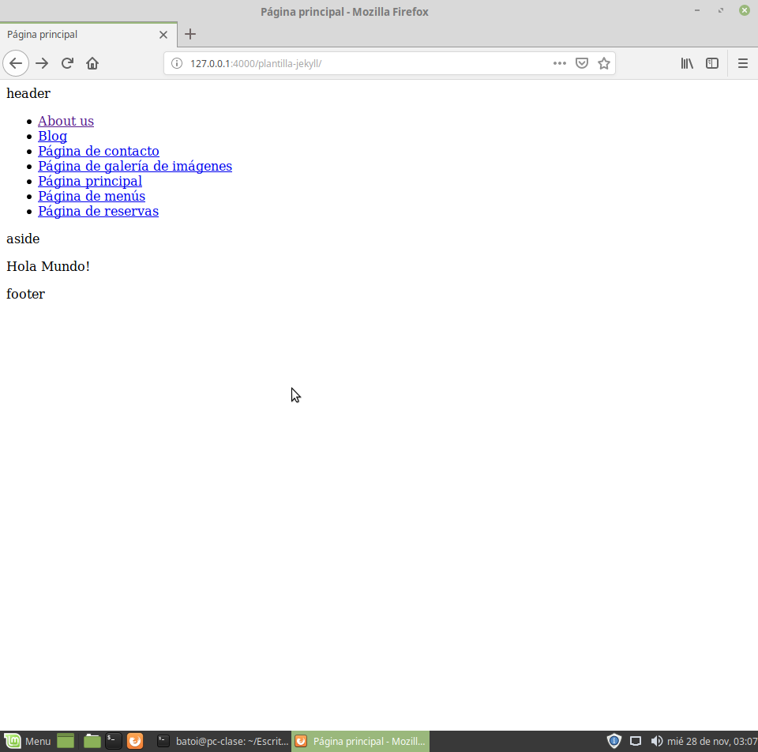

<p>Página de galería de imágenes<p>
	<figure>
		<figcaption>Imagen1: Versión Jekyll</figcaption>
		
	</figure>
	<br/>
	<figure>
		<figcaption>Imagen2: Prueba de navegación</figcaption>
		
	</figure>